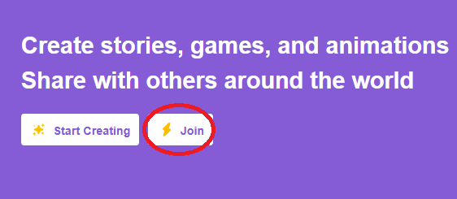
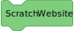
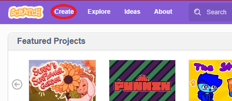
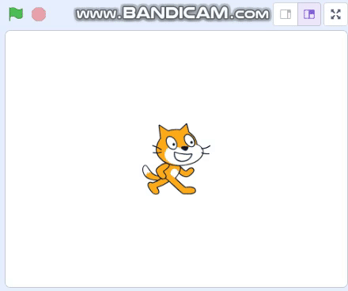
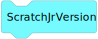

A video how to do Scratch.
Getting Started with Scratch
Follow these steps to get started with Scratch:
-  
- Create a Scratch account or log in if you already have one.
-  Click the "Create" button to start a new project.
- Explore the Scratch interface, which includes a stage, blocks palette, and sprite area.
Using Scratch Blocks
Now, let's use Scratch blocks to create code:
-
.svg) Drag and drop Scratch blocks from the blocks palette to the scripting area.
Drag and drop Scratch blocks from the blocks palette to the scripting area.
- Connect the blocks to create sequences of code.
- Use event blocks, motion blocks, and more to program your sprite.
- Click the green flag to run your project with the code you've created.
Exploring Scratch
Explore the Scratch platform:
-  Watch and learn from other Scratch projects.
- Remix existing Scratch projects to create your own unique creations.
- Share your Scratch creations with the Scratch community.
- 
Example Project
Explore an example Scratch project: